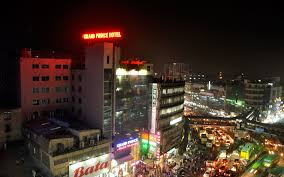

Old Dhaka (in Bengali, পুরনো ঢাকা ) is a term used to refer to the historic old city of Dhaka, the capital of Bangladesh.[1] It was founded in 1608 as Jahangir Nagar, the capital of Mughal Bengal. It is located on the banks of the Buriganga River. It was one of the largest and most prosperous cities of South Asia and the center of the worldwide muslin trade. The then Nawab of Bengal Murshid Quli Khan shifted the capital from Dhaka to Murshidabad in the early-18th century. With the rise of Calcutta (now Kolkata) during the British rule, Dhaka began to decline and came to be known as the "City of Magnificent Ruins". The British however began to develop the modern city from the mid-19th century.[2] Ahsan Manzil, the abode of Dhaka Nawabs Lalbagh Kella Old Dhaka is famous for its variety of foods and amicable living of people of all religions in harmony. The main Muslims festivals celebrated with funfair here are Eid-ul-Fitr, Eid-ul-Adha and Muharram,[3] Hindu festivals like Durga Puja,[4] Kali Puja, and Saraswati Puja[5] are also celebrated with enthusiasm. The festivals which are celebrated by all religious communities with much splendor include "Shakrain"(পৌষ সংক্রান্তি), Pohela Falgun,[6] and "Halkhata"(হালখাতা) . Religion wise, the old Dhaka is predominantly Muslim, while a significant number of Hindus also reside here. Christians and Buddhists are also inhabitants here in small numbers. Its inhabitants are known as Dhakaiya and converse in the Dhakaiya Kutti and Dhakaiya Urdu languages.

The existence of a settlement in the area that is now Dhaka dates from the 7th century. The city area was ruled by the Buddhist kingdom of Kamarupa and the Pala Empire before passing to the control of the Hindu Sena dynasty in the 9th century. The name of the town may have derived after the establishment of the Goddess Dhakeshvari's temple by Ballal Sena in the 12th century. After the Sena Empire, Dhaka was successively ruled by the Sultanate of Bengal as well as interruption[clarification needed] of governors from the Delhi Sultanate before being taken over by the Mughals in 1608. Dhaka started to grow from 1610 under the Mughal Subedhars.[7] The oldest standing mosque was built in 1454 by Bakht Binat during the rule of Nasiruddin Mahmud Shah.[7] The development of townships and housing has resulted in a significant growth in population came as the city was proclaimed the capital (Rajmahal) of Subah Bangalah under Mughal rule in 1608. Mughal Subahdar Islam Khan was the first administrator of the city. Khan named the town "Jahangir Nagar" (জাহাঙ্গীর নগর; City of Jahangir) in honour of the Mughal Emperor Jahangir, although this name was dropped soon after Jahangir's death. Farashganj (French town) was settled by the French 1780, then known as French Market. The area is known for its 19th and early 20th century mansions.[8] Farashganj also had the presence of French East India Company.[9] The 18th and 19th century saw significant number of Armenians settle down in Armanitola, then a predominantly Armenian neighborhood. There is an Armenian Church in Armanitola.[10] The British converted an old Afghan fort into a Central Jail in 1820.[7] Das Babu, prominent merchant had a daughter Indira, whose tomb is present here. Indira road is named after her and not after Indira Gandhi as some mistakenly believe it to be.[7] Pogose School, was founded by Armenian businessman Nicholas Pogose, as the first private school in Dhaka.[11] The national political party, Bangladesh Awami League, was founded in Rose Garden Palace in 23 June 1949.
Many of the British and Mughal era buildings of old Dhaka face the risk of being knocked down to be replaced with modern apartment buildings. Conservationist are trying to preserve them but the government of Bangladesh has shown little interest in preserving them.[21][22] The government declared Shakhari Bazar a heritage site in 2013, which met resistance from the residents who wanted to expand the buildings.[23] In 2014 a mosque built in 1707 was demolished leading to controversy and criticism.[24] Government run schools are in a depleted condition in Old Dhaka as of 2015.[25] In 2016 the three hundred-year-old Gorostan Shahi Mosque was demolished to build a new structure.[26] Many of the buildings are demolished because RAJUK and the Archaeological Department of the government did not list them as historical buildings which would have protected them.Bahadur Shah Park is a 19th-century park that serves as an exercise ground for the residents. Sadarghat is the river terminal of Dhaka City. Shakhari Bazar is a historically Hindu neighborhood known for its Shakhari (conch musical instrument) makers.[28] The Shakhari also make bangles from the shells. The shops are in decline as many prefer to buy cheaper bangles made from artificial shell.[29] Northbrook Hall auditorium was founded in 1881; it holds art exhibitions.[30] Old Dhaka is famous for its Morog (Chicken) Pulao, its different from traditional biriyani by using both turmeric and malai or cream of milk together.[31] Pohela Falgun is celebrated in old Dhaka.[32] Bulbul Academy of Fine Arts is a historic art school in Old Dhaka.[33] The Dhaka Central Jail, which has been closed down now houses a museum.[34] The jail was founded in 1788 as a criminal ward. when it closed in 2016 it housed over 8 thousand prisoners.[35] Shakrain is a festival of kite in Old Dhaka. It marks the end of Poush, the first month of winter in Bangladesh.[36] It also involves rooftop parties, fire-breathing, and fireworks.[37] Bongshal Pond is Tanti Bazaar is a community pool and gathering spot.[38] Chaand Raat (the night before eid) is celebrated here with fireworks and Adda (hangout).[39] Taazia processions are held by Shia Muslims on the occasion of Muharram near Hossaaini and Barha Katra.[3] There are 12 musical schools in Old Dhaka.[40] Old Dhaka has a sense of community where neighbors know each other and that differentiat it from new Dhaka.[41] During Durge Puja some parts of Old Dhaka are brightly decorated and people play drums in the streets